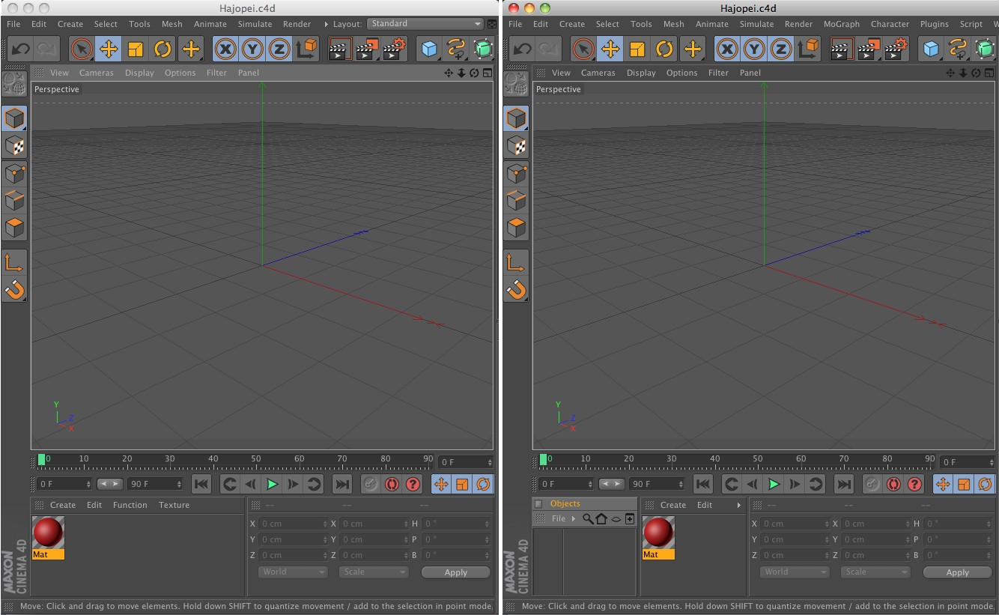

Windows
Re-sizing
To change a window’s width or height, first move the mouse pointer to a window border; the mouse pointer changes to a double arrow to indicate the direction — vertical or horizontal — in which you can drag the border. Drag the border to re-size. The neighboring windows are re-sized automatically to make room.
Windows can be maximized within the main window by pressing
Windows can also be minimized and maximized as follows:
 From left to right: initial state,
From left to right: initial state, Windows can be maximized by clicking on the Grasp icon and simultaneously pressing the following buttons:
- Ctrl: The window will be minimized.
- ALT: The window will be maximized in its column or row, depending on its current position. All other windows in that location will be minimized. The minimized windows will be displayed as narrow bars. When the cursor is placed over a given bar, which manager it contains will be displayed as text.

The edge of a manager window can be double-clicked even if the double arrow icon is displayed. Double-clicking the edge of a manager window will automatically arrange this window for better visibility.
This also works in the Viewport if all four views are displayed. Simply double-click where the views meet and they will automatically be scaled to an equal size.
Windows can be maximized within the main window by pressing
Arranging
You can load a previously saved layout or revert to the default layout at any time using the Window / Layout sub-menu.
To change the position of a window, drag the window’s corrugated square to the new position. The cursor will change its shape and a thick, light-colored line will appear which shows where the window will be docked when the mouse button is released.
The following images show a possible docking locations. At the left of each image is the state prior to docking at the right after docking.

 Before and after Before and after |
Before and after |
 Before and after Before and after |
 Before and after Before and after |
Undocking
You can insert a window or a icon palette into an undocked window to form a new GUI group. This can help in particular if you are using more than one monitor.
To undock a window, click the window’s corrugate square and choose Undock from the menu that appears. The window becomes freestanding and floats above the main window.
Undocked windows are fully functional. The advantage of docked windows is automatic justification when you re-size a window.
Docking
New windows are undocked by default. To dock a window, drag its corrugated square to the docking position. A white line will appear while you drag to indicate where the window will be inserted.
 New view, still undocked.
New view, still undocked. The new view docked.
The new view docked.To remove a window, click the window’s corrugated square and choose Undock. Click the corrugated square once more and this time choose Close.
New view, still undocked.The new view docked.To remove a window, click the window’s checkered box and choose Undock. Click the corrugated square once more and this time choose Close.
"Tearing Free" Menus
Open menus can be "torn free" by clicking on the corrugated square at the top of the menu. The menu will be copied to an independent dialog window which in turn can easily be re-integrated into the GUI by simply clicking and dragging on the corrugated square.